Version control is as much a philosophy as a set of tools; you don't
need to master Git to utilize version control (though it is certainly a
worthwhile tool for many researchers).
Git is a command-line program for version control of repositories.
It keeps track of changes you make to files in your repository and
stores those changes in a .git folder in that repository.
These changes happen whenever you make a commit. Git stores the
history of these commits in a "tree", so you can go back to any
previous commit. By keeping track of the differences between
commits, Git can be much more efficient than storing an entire copy of
each version in a document's history.
You could utilize Git completely on its own, on your local computer, and
get a lot of benefits. You will have a history of the changes you made
to a project, allowing you to go back to any old version of your work.
However, where Git really shines is in collaborative work. In order to
effectively collaborate with others on a project, you need two basic
features: a way to allow people to work in parallel, and a way to host
repositories somewhere where everyone can access them. The first feature
is branching, which is part of Git, and the hosting part can be
taken care of by platforms like GitHub, GitLab, or Bitbucket. We will
focus on GitHub.
GitHub is a site that can remotely host your Git repositories. By
putting your repository onto GitHub, you get a backup of the repository,
a way to collaborate with others, and a lot of other features.
Git:
First developed in 2005, git is a version control software that allows users to make changes and add versions to their code.
Changes and versions are saved locally.
Accessible through the Shell.
GitHub:
First launched in 2008, its main focus is hosting and sharing code.
Uses Git version control software.
Changes and versions are saved online (requires an account).
Mainly administered through the web (it also has a desktop app).
remote: somewhere other than your computer. GitHub can host remote
repositories.
upstream: primary or main branch of original repository.
downstream: branch or fork of repository.
Actions:
clone: copy of a repository that lives locally on your computer.
Pushing changes will affect the repository online.
pull: getting latest changes to the repository on your local
computer.
the fetch command does the same, however one needs to also merge the changes, whilst with pull, the merge action is automatic.
branch: a history of changes to a repository. You can have parallel
branches with separate histories, allowing you to keep a "main"
version and development versions.
fork: copy of someone else's repository stored locally on your
account. From forks, you can make pull requests to the main branch.
commit: finalize a change.
push: add changes back to the remote repository.
merge: takes changes from a branch or fork and applies them to the
main.
These are also commands when paired with git!
Using the following synthax git <command> one can trigger an action. An example is git pull, which will pull all of the latest changes in the remote repository.
Funtional:
pull request: proposed changes to/within a repository.
issue: suggestions or tasks needed for the repository. Allows you to
track decisions, bugs with the repository, etc.
Visualizing the commands through a workflow example (graphic's correction: marged merged)
Since we are talking about making science accessible, we invite you to use GitHub to save and share your code. Please start by creating a GitHub account at https://github.com/.
User Profile
Just like in any other social media platform, you can create a profile for yourself. This is where you can add a picture, a description of yourself, and a link to your website. You can also add your location, your organization, and your pronouns. You can have a list of your most important repositories and show off your daily contributions. You are able to customize your profile to your liking. Check out this profile for fancy example.
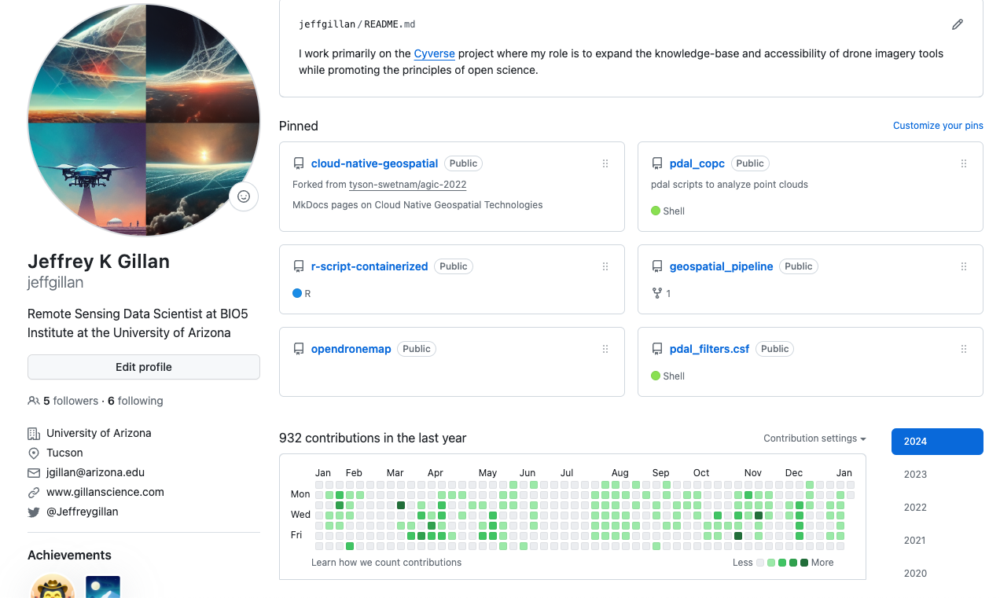
Search
At the top of most pages, is a search bar. Use this to find repositories, users, and organizations. You can also use it to search for specific code within a repository.
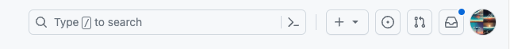
Starring Repositories
You can star repositories that you like. This is a way to bookmark repositories that you want to come back to later. You can also use this to show your appreciation for a repository. You can see all of your starred repositories by clicking on your profile picture and then clicking on Your stars.
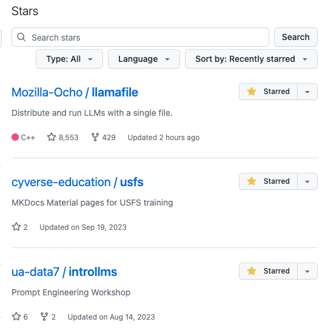
Creating Your Own Repository
Repositories are where your code is stored. A suggestion is to have one repository for one project.
You can create repositories by clicking on the Repositories tab, and then clicking New.
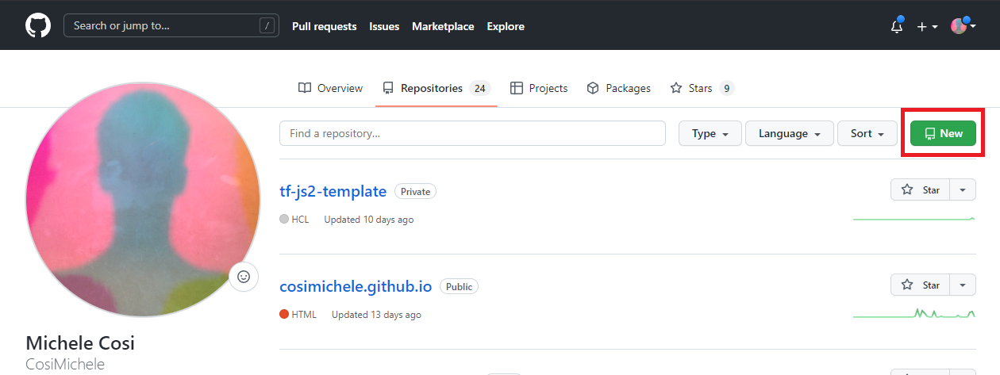
Here, you can choose the name of your own repository, choose to make it private or public, adding a README and a licence. It is strongly reccomended that you choose to add an empty README file.
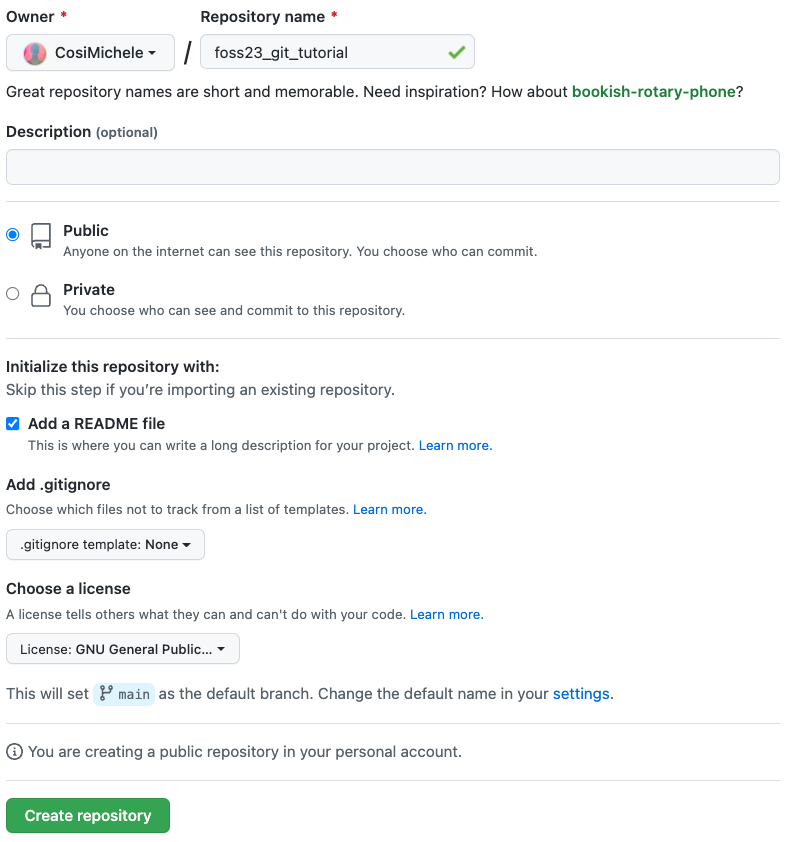
So, why a README?
There are two main reasons why you would like a README file:
It adds structure to your repository automatically - otherwise you would need to create said structure by yourself (not recommended for beginners).
It is the "default" file that GitHub reads upon opening the repository. It can be treated as the go-to file that explains what the repository is for, what each file does, how to cite your reasearch, amongst other things.
Adding a Licence
The addition of a licence can heavily contribute to the shareability of your code. Make sure that whichever licence you choose is in line with your principals as well as your project's. GitHub comes with a list of licences which you can review. It is also common to choose a licence later on!
Ultimately, your new repository should look like the following screenshot. Notice the LICENCE document and the README.md
Editing the README.md (and other text files on GitHub)
The Github repository file has a .md extension which stands for Markdown. Markdown is a lightweight markup language for creating formatted text using a plain-text editor common throughout text files on the web. It uses symbols (*~-#`) for syntaxing text, and it is what GitHub (and this website!) use to format text. Markdown is easier to use than HTML. You can read more on Markdown on the Markdown Guide.
After learning the basics of using Git, which you can learn with the
Software Carpentry Git Lesson, there are some next
things that can be useful to learn. Here are a couple topics that are
worth digging into more:
Using the Git log
You can access using git log
Will show you your commit history
Useful for figuring out where you need to roll back to
Reverting
There are a lot of different ways to "undo" something in Git
Some are safer, some are a bit riskier
Depends on what stage of the commit process you're in
you will probably have to deal with merge conflicts at some point
Merge conflicts happen when two branches are being merged, but they have different changes to the same part of a file
Perhaps you are working on a feature branch, and you change line 61 in file.R, but someone else made a change to the main branch at line 61 in file.R. When you try to merge the feature and main branches, Git won't know which changes to line 61 in file.R are correct, and you will need to manually decide.
GitHub allows commited files to be uploaded only if the file is of 100MB or less (with a warning being issued for files between 50MB and 100MB). Additionally, GitHub recommends to keep repositories below the 1GB threshold, as this also allows for quicker cloning and sharing of the repository. If a large file has been uploaded by mistake and you wish to remove it, you can follow these instrutctions.
If you do have to work with large files and Git, here are some questions to ask yourself:
Is this data shareable?
Are there alternative file hosting platforms I can use?
How will this data impact the sharability of this repository?
Am I using a .gitignore?
GitHub now offers the Git Large File Storage ( Git LFS): the system works by storing references to the file in your repository, but not the file itself -- it creates a pointer file within the repo, and stores the file elsewhere. If you were to clone the repository, the pointer file will act as a map to show you how to obtain the original file.
Git LFS data upload limits are based on your GitHub subscription:
2 GB for GitHub free and GitHub Pro
4 GB for GitHub Team
5 GB for GitHub Enterprise Cloud
A depiction of how the Git LFS pointer-repository relationship works.
At its core, GitHub is just a place to host your Git repositories.
However, it offers a lot of functionality that has less to do with Git,
and more to do with Project Management. We will
walk through a few of these useful features.
There are other platforms that address Version Control and have similar functionalities to GitHub:
GitLab: An alternative to GitHub, GitLab offers both a cloud-hosted platform and a self-hosted option (GitLab CE/EE). It provides a comprehensive DevOps platform with built-in CI/CD, container registry, and more.
Bitbucket: Atlassian's Bitbucket is a Git repository hosting service that also supports Mercurial repositories. It offers integration with Jira, Confluence, and other Atlassian products.
SourceForge: A platform that provides Git and Subversion hosting, as well as tools for project management, issue tracking, and collaboration.
AWS CodeCommit: Part of Amazon Web Services (AWS), CodeCommit is a managed Git service that integrates seamlessly with other AWS services.
Azure DevOps Services (formerly VSTS)): Microsoft's Azure DevOps Services offers Git repository hosting along with a wide range of DevOps tools for planning, developing, testing, and deploying software.
Mercurial: Like Git, Mercurial is a distributed version control system, but with a different branching and merging model. It's an alternative to Git for version control.
Navigate to the GitHub website and click Sign Up, and follow the on screen instructions.
Through this exercise, users will learn to make changes using the command line. To remove potential issues with SSH and Tokens, we are going to carry out this exercise using CodeSpaces. Refer to the "Steps to Launch Codespaces" section in the How to Talk to Computers in order to launch a CodeSpace.
Adding Code Locally Using Your Machine
This exercise can be carried out locally, on your machine. Here are the requisites and steps required to clone the repository and push changes back to GitHub.
The following command will install git and all related packages on your Unix machine.
$ sudo apt-get install -y git-all
You then need to choose between generating a Personal Access Token or using SSH keys. This is useful if you want to work locally and push your changes to GitHub.
Choice A: Generate a Personal Access Token
You can follow the official documentation on how to generate Tokens here. Following are quick steps you can follow in order to setup your account on your machine using tokens:
On your coumputer:
Clone your repository (git clone <repository>)
Make changes where necessary, and add (git add <changed files>), commit (git commit -m "<message on changes>") and push your changes (git push origin).
You should be prompted to logging in your GitHub account. Put your email but not your password. Instead, open your web browser and follow the steps below:
On GitHub:
Navigate to your GitHub Settings (You can access your account Settings from the drop down menu where your account icon is, on the top right of the screen)
Scroll to the bottom of the left hand side menu to find Developer settings and open it.
Click Personal access tokens > Tokens (classic)
Click Generate new token > Generate new token (classic). You might need to input your Authentification code if you have enabled 2FA.
Give it a name, and all the scopes you require (tip: select all scopes and No Expiration), then click Generate Token. Copy the new generated Token
Back on your computer:
If you have been following the steps above, you should still be in your shell with GitHub still asking for your password.
Paste your Token here, and you should be logging in. Your changes should then be saved to GitHub.
Choice B: Connecting via SSH
The process of connecting your computer to GitHub using an SSH key is more expedited (and probably less confusing).
As a setup step, see if your computer is already connected to GitHub by doing ssh -T git@github.com. If the response message is git@github.com: Permission denied (publickey). it signifies that your computer is not yet linked with GitHub. To link your computer to github to the following:
Generate an SSH key with a level of encryption that you prefer: ssh-keygen -T ed25519 -C <your github email>. This command generates an SSH key with ed25519 encryption (harder to crack!) and adds your email as "comment" (-C, will help recongizing the user adding the key). A number of additional questions are going to ask you where you'd like to save the key and whether you'd like to add a password for protection; unless you want to save it elsewhere, feel free to use the default options. Upon completion you should see something like this:
Your identification has been saved in /c/Users/<user>/.ssh/id_ed25519
Your public key has been saved in /c/Users/<user>/.ssh/id_ed25519.pub
The key fingerprint is:
SHA256:SMSPIStNyA00KPxuYu94KpZgRAYjgt9g4BA4kFy3g1o <your github email>
The key's randomart image is:
+--[ED25519 256]--+
|^B== o. |
|%*=.*.+ |
|+=.E =.+ |
| .=.+.o.. |
|.... . S |
|.+ o |
|+ = |
|.o.o |
|oo+. |
+----[SHA256]-----+
Upon generating the ssh key, copy it. You can reveal it by doing cat ~/.ssh/id_ed25519.pub.
In GitHub, go to your settings: click your account icon on top right, and from the drop down menu, select Settings and then SSH and GPG keys. Here, click on New SSH Key, where you can then paste the newly geneated key. Add a name reflecting your machine and save changes.
Optional: if you want to check if you successfully linked your computer to GitHub, do ssh -T git@github.com. You should receive the following message: `Hi ! You've successfully authenticated, but GitHub does not provide shell access.
Adding code locally is a more complex than adding code through the web page, but it allows for better control on what files you commit.
To add or modify code locally, you need to clone the repository on your computer.
You can then clone the repository by clicking on the Code button, and copying the link shown
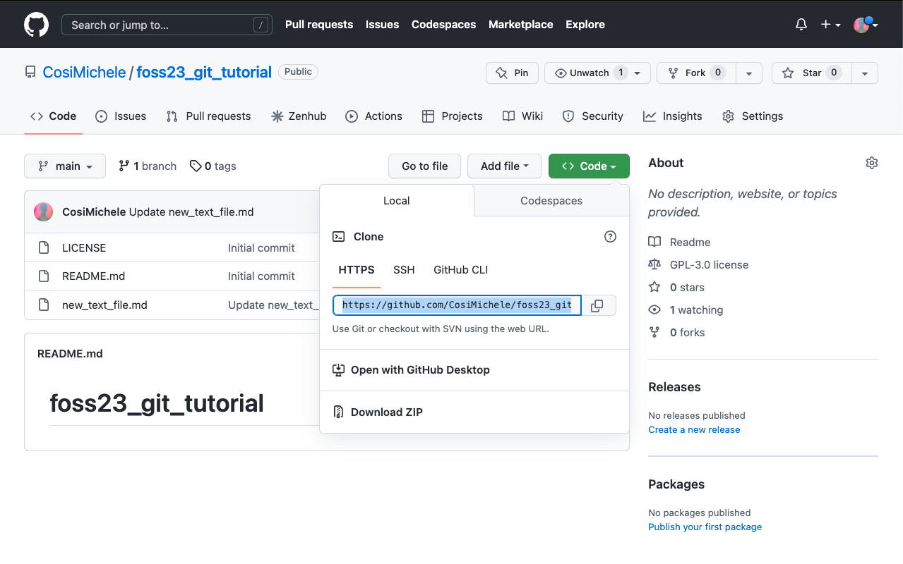
On your machine, open a terminal window and type the following command:
$ git clone <repository address> # Replace <repository address> with the link you copied such as below
$ git clone https://github.com/CosiMichele/FOSSF24-tutorial.git
Cloning into 'FOSSF24-tutorial_tutorial'...
remote: Enumerating objects: 13, done.
remote: Counting objects: 100% (13/13), done.
remote: Compressing objects: 100% (12/12), done.
remote: Total 13 (delta 5), reused 0 (delta 0), pack-reused 0
Unpacking objects: 100% (13/13), 14.47 KiB | 90.00 KiB/s, done.
Your code is now available to you on your machine, and you can add and modify files as needed.
When using CodeSpaces, there is no need to clone your repository (steps for cloning are reported in the admonition above).
You can now modify or add files locally. However you will still have to push changes to the repository. Prior to doing so there are a couple of steps you should do:
git status: it checkes on the status of the repository (files that have been modified, deleted, added - from either local or in the online repository)
git pull: it checks and "pulls" changes from the online repository to your local repository. It ensures that you are always updated on the repository files and it can save a lot of time in case there are clashing commits from different users.
To do so:
Add all fiels you have modified and want to commit:
$ git add . # Recall that "." (period) stands for all files in a folder
Commit the changes. When committing changes, you have to add a message (in quotation marks) with the -m flag. This message is a concise and descriptive few words about what you did:
Branching allows you to develop your code whilst in a contained environment separate from your main environment. You can view the list and number of branches on the top of your repository.
Why working on branches?
Branches allow you to add/remove/change exisiting code independently from your main branch. This code can include alphas, betas and different versions of your code. Branches can be used to develop documentation or include different functionalitiets focused on Operating Systems and/or clusters and job schedulers. If needed, you can add these codes to your main branch later using pull requests.
To create a new branch select the branch icon (listing the number of branches). This will open the branch page, which will list all of the branches in this repository.
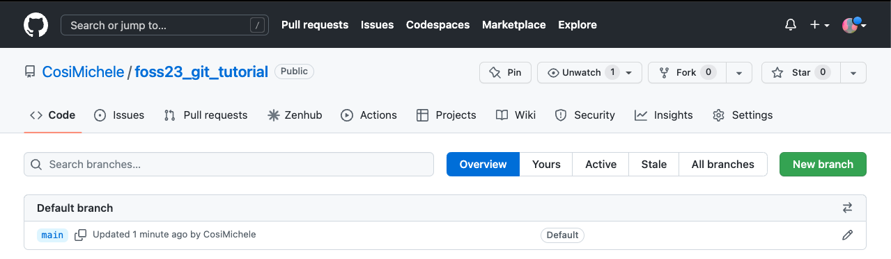
Select New Branch on the top right. Give the new branch a name of your choice, select the source of code (in this case the only source of code can be the main branch) and select Create branch.
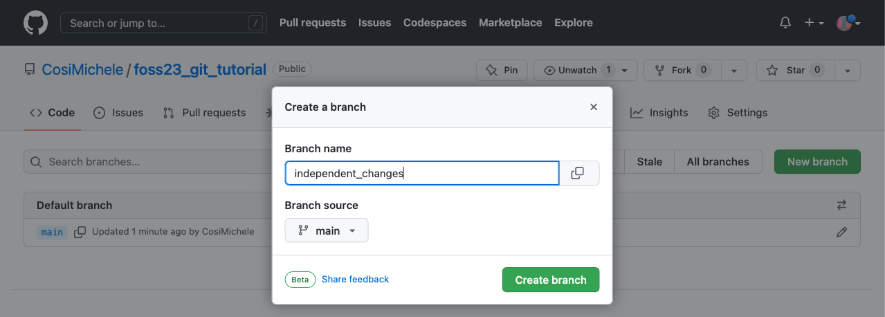
You can now see the updated list of all your branches.
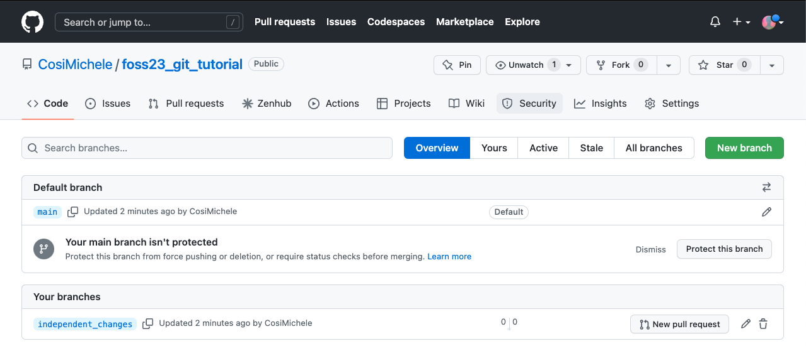
You can now use this new branch to create changes you are not yet ready to put in your main branch.
Want to delete a branch?
You can delete a branch from the branch web page by clicking on the trash can icon. Beware! All the changes you've made on that branch will be deleted!
Working on your machine?
Once you create a branch online, you can change to the desired branch on your machine with git switch <branch>. Don't forget to push your changes first!
Pull and Tab
Don't forget to perform a git pull!
Don't know your branches? Tab! When typing git switch, press tab to see the options of all the branches you've created.
Pull requests (PR) are proposed changes you can make on a repository. In this specific case, pull requests can be used to merge changes from a branch to another. Pull requests can also come from forks of your repository that another user or collaborator has made.
Assuming you have made changes in your branch (added a file, for example), a pop up will notify you that a branch has pushed some changes. In case you want to merge the branch and the main repository, you can review and merge by clicking the Compare & pull request button. However, you may want to wait until more changes are made.
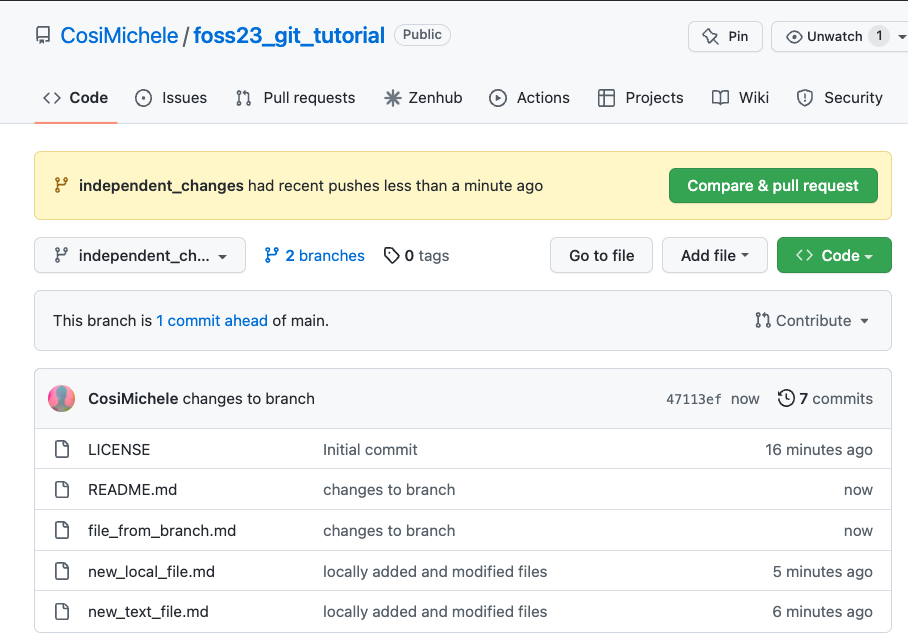
Once you are ready to merge the changes onto your main branch, click on the branch icon, and select New pull request from the branch you have just made changes. This will open a new page which will list all the changes made showing all files that have been modified, added, or deleted. When you're done reviewing your changes, click Create pull request.
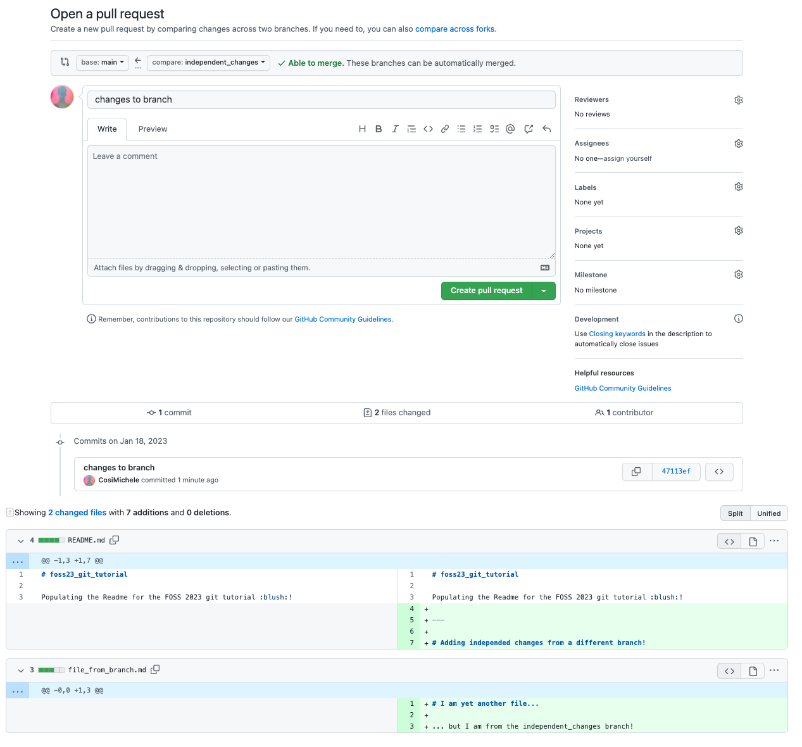
Pay attention to the information on the PR page!
The PR page will not only show you what changes you've made, but also where the changes are coming from (which branch), as well as reviewers, assigneers, labels and other information necessary when working on a big project. It will also show whether the changes are Able to be merged () or not ()!
Upon createing the pull request, a new page will open which will test whether the changes can be merged automatically. Changes that are not able to be merged usually clash with other changes other collaborators have made - this will require your revision prior to merging the PR! After revision, select Merge pull request and Confirm merge.
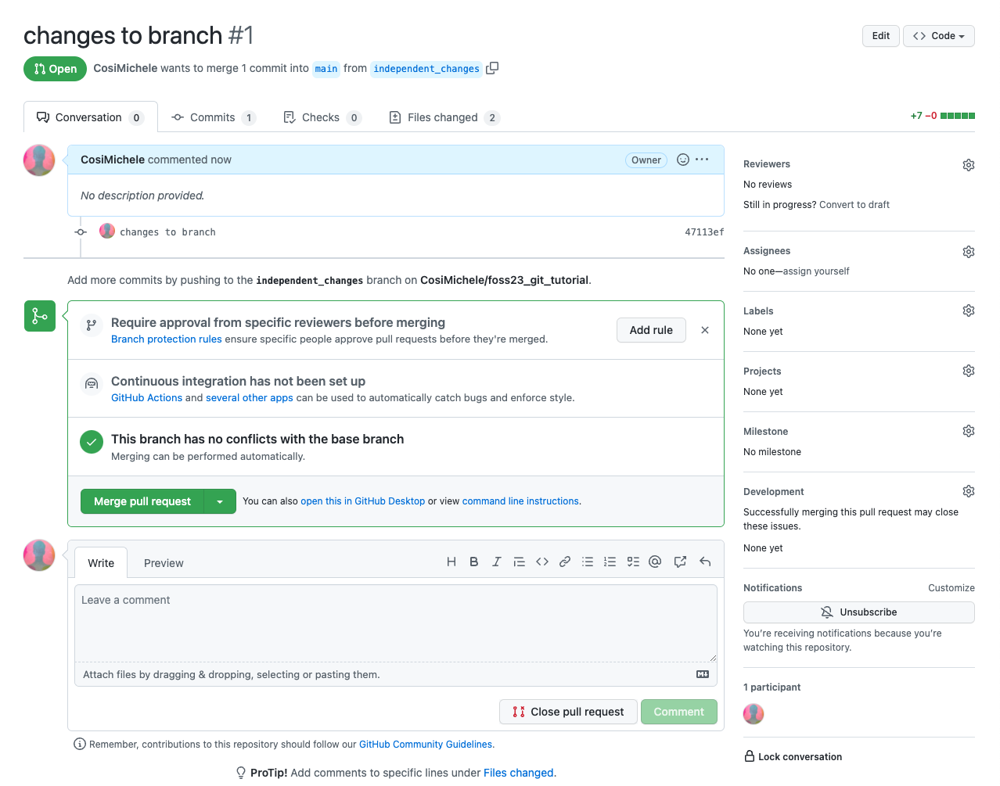
Your main repository should now have the files created in your other branch and merged through the PR!
Using Git can be frustrating to even the most experienced users
When you find a new repository on GitHub that you think can help your research, what are the first things you should do?
Look at the README.md
Most GitHub repositories have a README.md file which explains what you're looking at.
Look at the LICENSE
Not all repositories are licensed the same way - be sure to check the LICENSE file to see whether the software is open source, or if it has specific requirements for reuse.


{kind=link}